전기공사기사 (2021-05-15 기출문제)
1과목: 전기응용 및 공사재료
1. 형광등은 형광체의 종류에 따라 여러 가지 광색을 얻을 수 있다. 형광체가 규산아연일 때의 광색은?
- 녹색
- 백색
- 청색
- 황색
(정답률: 53%)

2. 자기방전량만을 항시 충전하는 부동충전방식의 일종인 충전방식은?
- 세류충전
- 보통충전
- 급속충전
- 균등충전
(정답률: 74%)
3. 흑연화로, 카보런덤로, 카바이드로 등의 전기로 가열방식은?
- 아크 가열
- 유도가열
- 간접저항 가열
- 직접저항 가열
(정답률: 73%)
4. 양수량 30m3/min, 총 양정 10m를 양수하는데 필요한 펌프용 전동기의 소요출력(kW)은 약 얼마인가? (단, 펌프의 효율은 75%, 여유계수는 1.1 이다.)
- 59
- 64
- 72
- 78
(정답률: 70%)
5. 유전체 자신을 발열시키는 유전 가열의 특징으로 틀린 것은?
- 열이 유전체 손에 의하여 피열물 자체 내에서 발생한다.
- 온도상승 속도가 빠르다.
- 표면의 소손과 균열이 없다.
- 전 효율이 좋고, 설비비가 저렴하다.
(정답률: 63%)
6. 다이오드 클램퍼(clamper)의 용도는?
- 전압증폭
- 전류증폭
- 전압제한
- 전압레벨 이동
(정답률: 64%)
7. 하역 기계에서 무거운 것은 저속으로, 가벼운 것은 고속으로 작업하여 고속이나 저속에서 다 같이 동일한 동력이 요구되는 부하는?
- 정토크 부하
- 정동력 부하
- 정속도 부하
- 제곱토크 부하
(정답률: 75%)
8. 루소 선도가 다음과 같이 표시될 때, 배광곡선의 식은?
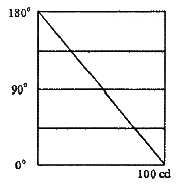
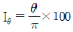
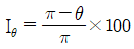
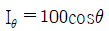
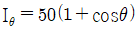
(정답률: 56%)
9. 총 중량이 50t 이고, 전동기 6대를 가진 전동차가 구배 20‰의 직선궤도를 올라가고 있다. 주행 속도 40km/h 일 때 각 전동기의 출력(kW)은 약 얼마인가? (단, 가속저항은 1550kg, 중량 당 주행저항은 8kg/t, 전동기 효율은 0.9 이다.)
- 52
- 60
- 66
- 72
(정답률: 34%)
10. 반도체에 빛이 가해지면 전기 저항이 변화되는 현상은?
- 홀효과
- 광전효과
- 제벡효과
- 열진동효과
(정답률: 79%)
11. 합성수지몰드공사에 관한 설명으로 틀린 것은?
- 합성수지몰드 안에는 금속제의 조인트 박스를 사용하여 접속이 가능하다.
- 합성수지몰드 상호 간 및 합성수지 몰드와 박스 기타의 부속품과는 전선이 노출되지 아니하도록 접속해야 한다.
- 합성수지몰드의 내면은 전선의 피복이 손상될 우려가 없도록 매끈한 것이어야 한다.
- 합성수지몰드는 홈의 폭 및 깊이가 3.5cm 이하로 두께는 2mm 이상의 것이어야 한다.
(정답률: 51%)
12. 고유 저항(20℃에서)이 가장 큰 것은?
- 텅스텐
- 백금
- 은
- 알루미늄
(정답률: 52%)
13. 무대 조명의 배치별 구분 중 무대 상부 배치 조명에 해당되는 것은?
- Foot light
- Tower light
- Ceiling Spot light
- Suspension Spot light
(정답률: 71%)
14. 버스 덕트 공사에서 덕트 최대 폭(mm)에 따른 덕트 판의 최소 두께(mm)로 틀린 것은? (단, 덕트는 강판으로 제작된 것이다.)
- 덕트 최대 폭 100mm : 최소 두께 1.0mm
- 덕트 최대 폭 200mm : 최소 두께 1.4mm
- 덕트 최대 폭 600mm : 최소 두께 2.0mm
- 덕트 최대 폭 800mm : 최소 두께 2.6mm
(정답률: 47%)
15. 전선 배열에 따라 장주를 구분할 때 수직배열에 해당되는 장주는?
- 보통 장주
- 래크 장주
- 창출 장주
- 편출 장주
(정답률: 62%)
16. 다음 중 절연성, 내온성, 내유성이 풍부하며 연피케이블에 사용하는 전기용 테이프는?
- 면테이프
- 비닐테이프
- 리노테이프
- 고무테이프
(정답률: 65%)
17. 피뢰침용 인하도선으로 가장 적당한 전선은?
- 동선
- 고무 절연전선
- 비닐 절연전선
- 캡타이어 케이블
(정답률: 69%)
18. 경완철에 현수애자를 설치할 경우에 사용되는 자재가 아닌 것은?
- 볼쇄클
- 소켓아이
- 인장클램프
- 볼크레비스
(정답률: 50%)
19. 3MVA 이하 H종 건식변압기에서 절연재료로 사용하지 않는 것은?
- 명주
- 마이카
- 유리섬유
- 석면
(정답률: 47%)
20. 저압 가공 인입선에서 금속관 공사로 옮겨지는 곳 또는 금속관으로부터 전선을 뽑아 전동기 단자 부분에 접속할 때 사용하는 것은?
- 엘보
- 터미널 캡
- 접지클램프
- 엔트런스 캡
(정답률: 66%)
2과목: 전력공학
21. 컴퓨터에 의한 전력조류 계산에서 슬랙(slack)모선의 초기치로 지정하는 값은? (단, 슬랙 모선을 기준 모선으로 한다.)
- 유효 전력과 무효 전력
- 전압 크기와 유효 전력
- 전압 크기와 위상각
- 전압 크기와 무효 전력
(정답률: 32%)
22. 전력계통에서 내부 이상전압의 크기가 가장 큰 경우는?
- 유도성 소전류 차단 시
- 수차발전기의 부하 차단 시
- 무부하 선로 충전전류 차단 시
- 송전선로의 부하 차단기 투입 시
(정답률: 41%)
23. 송전단 전압을 Vs, 수전단 전압을 Vr, 선로의 리액턴스를 X라 할 때, 정상 시의 최대 송전전력의 개략적인 값은?
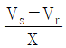
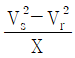
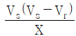
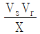
(정답률: 43%)
24. 가공송전선로에서 총 단면적이 같은 경우 단도체와 비교하여 복도체의 장점이 아닌 것은?
- 안정도를 증대시킬 수 있다.
- 공사비가 저렴하고 시공이 간편하다.
- 전선표면의 전위경도를 감소시켜 코로나 임계전압이 높아진다.
- 선로의 인덕턴스가 감소되고 정전용량이 증가해서 송전용량이 증대된다.
(정답률: 43%)
25. 그림과 같은 송전계통에서 S점에 3상 단락사고가 발생했을 때 단락전류(A)는 약 얼마인가? (단, 선로의 길이와 리액턴스는 각각 50km, 0.6Ω/km 이다.)
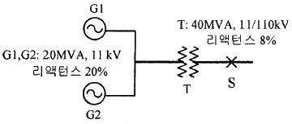
- 224
- 324
- 454
- 554
(정답률: 17%)
26. 3상 3선식 송전선로에서 각 선의 대지정전용량이 0.5096μF 이고, 선간정전용량이 0.1295μF 일 때, 1선의 작용정전용량은 약 몇 μF 인가?
- 0.6
- 0.9
- 1.2
- 1.8
(정답률: 36%)
27. 배전용 변전소의 주변압기로 주로 사용되는 것은?
- 강압 변압기
- 체승 변압기
- 단권 변압기
- 3권선 변압기
(정답률: 32%)
28. 최대수용전력이 3kW인 수용가가 3세대, 5kW인 수용가가 6세대라고 할 때, 이 수용가군에 전력을 공급할 수 있는 주상변압기의 최소 용량(kVA)은? (단, 역률은 1, 수용가간의 부등률은 1.3 이다.)
- 25
- 30
- 35
- 40
(정답률: 38%)
29. 500kVA의 단상 변압기 상용 3대(결선 △-△), 예비 1대를 갖는 변전소가 있다. 부하의 증가로 인하여 예비 변압기까지 동원해서 사용한다면 응할 수 있는 최대부하(kVA)는 약 얼마인가?
- 2000
- 1730
- 1500
- 830
(정답률: 34%)
30. 3상용 차단기의 정격 차단 용량은?
- √3 × 정격 전압 × 정격 차단 전류
- 3√3 × 정격 전압 × 정격 전류
- 3 × 정격 전압 × 정격 차단 전류
- √3 × 정격 전압 × 정격 전류
(정답률: 46%)
31. 망상(network)배전방식의 장점이 아닌 것은?
- 전압변동이 적다.
- 인축의 접지사고가 적어진다.
- 부하의 증가에 대한 융통성이 크다.
- 무정전 공급이 가능하다.
(정답률: 44%)
32. 부하전류 차단이 불가능한 전력개폐 장치는?
- 진공차단기
- 유입차단기
- 단로기
- 가스차단기
(정답률: 45%)
33. 단상 2선식 배전선로의 말단에 지상역률 cosθ인 부하 P(kW)가 접속되어 있고 선로 말단의 전압은 V(V)이다. 선로 한 가닥의 저항을 R(Ω)이라 할 때 송전단의 공급전력(kW)은?
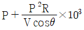
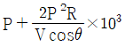
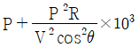
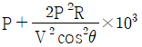
(정답률: 28%)
34. 전력계통의 전압을 조정하는 가장 보편적인 방법은?
- 발전기의 유효전력 조정
- 부하의 유효전력 조정
- 계통의 주파수 조정
- 계통의 무효전력 조정
(정답률: 33%)
35. 증기터빈내에서 팽창 도중에 있는 증기를 일부 추기하여 그것이 갖는 열을 급수가열에 이용하는 열사이클은?
- 랭킨사이클
- 카르노사이클
- 재생사이클
- 재열사이클
(정답률: 25%)
36. 직격뢰에 대한 방호설비로 가장 적당한 것은?
- 복도체
- 가공지선
- 서지흡수기
- 정전방전기
(정답률: 41%)
37. 역률 0.8(지상)의 2800kW 부하에 전력용 콘덴서를 병렬로 접속하여 합성역률을 0.9로 개선하고자 할 경우, 필요한 전력용 콘덴서의 용량(kVA)은 약 얼마인가?
- 372
- 558
- 744
- 1116
(정답률: 37%)
38. 비등수형 원자로의 특징에 대한 설명으로 틀린 것은?
- 증기 발생기가 필요하다.
- 저농축 우라늄을 연료로 사용한다.
- 노심에서 비등을 일으킨 증기가 직접 터빈에 공급되는 방식이다.
- 가압수형 원자로에 비해 출력밀도가 낮다.
(정답률: 28%)
39. 저압배전선로에 대한 설명으로 틀린 것은?
- 저압 뱅킹 방식은 전압변동을 경감할 수 있다.
- 밸런서(balancer)는 단상 2선식에 필요하다.
- 부하율(F)와 손실계수(H) 사이에는 1≥F≥H≥F2≥0의 관계가 있다.
- 수용률이란 최대수용전력을 설비용량을 나눈 값을 퍼센트로 나타낸 것이다.
(정답률: 42%)
40. 선로, 기기 등의 절연 수준 저감 및 전력용 변압기의 단절연을 모두 행할 수 있는 중성점 접지방식은?
- 직접접지방식
- 소호리액터접지방식
- 고저항접지방식
- 비접지방식
(정답률: 35%)
3과목: 전기기기
41. 10kW, 3상 380V 유도전동기의 전부하 전류는 약 몇 A 인가? (단, 전동기의 효율은 85%, 역률은 85% 이다.)
- 15
- 21
- 26
- 36
(정답률: 28%)
42. 동기발전기에서 동기속도와 극수와의 관계를 옳게 표시한 것은? (단, N : 동기속도, P : 극수이다.)
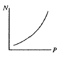
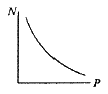
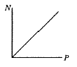
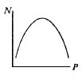
(정답률: 41%)
43. 변압기에서 생기는 철손 중 와류손(Eddy Current Loss)은 철심의 규소강판 두께와 어떤 관계에 있는가?
- 두께에 비례
- 두께의 2승에 비례
- 두께의 3승에 비례
- 두께의 1/2승에 비례
(정답률: 39%)
44. 부스터(Boost)컨버터의 입력전압이 45V로 일정하고, 스위칭 주기가 20kHz, 듀티비(Duty ratio)가 0.6, 부하저항이 10Ω일 때 출력전압은 몇 V 인가? (단, 인덕터에는 일정한 전류가 흐르고 커패시터 출력전압의 리플성분은 무시한다.)
- 27
- 67.5
- 75
- 112.5
(정답률: 19%)
45. 변압기 단락시험에서 변압기의 임피던스 전압이란?
- 1차 전류가 여자전류에 도달했을 때의 2차측 단자전압
- 1차 전류가 정격전류에 도달했을 때의 2차측 단자전압
- 1차 전류가 정격전류에 도달했을 때의 변압기 내의 전압강하
- 1차 전류가 2차 단락전류에 도달했을 때의 변압기 내의 전압강하
(정답률: 30%)
46. 일반적인 DC 서보모터의 제어에 속하지 않는 것은?
- 역률제어
- 토크제어
- 속도제어
- 위치제어
(정답률: 35%)
47. 극수가 4극이고 전기자권선이 단중 중권인 직류발전기의 전기자전류가 40A이면 전기자권선의 각 병렬회로에 흐르는 전류(A)는?
- 4
- 6
- 8
- 10
(정답률: 42%)
48. 3상 농형 유도전동기의 전전압 기동토크는 전부하토크의 1.8배이다. 이 전동기에 기동보상기를 사용하여 기동전압을 전전압의 2/3로 낮추어 기동하면, 기동토크는 저부하토크 T와 어떤 관계인가?
- 3.0 T
- 0.8 T
- 0.6 T
- 0.3 T
(정답률: 33%)
49. 2전동기설에 의하여 단상 유도전동기의 가상적 2개의 회전자 중 정방향에 회전하는 회전자 슬립이 s이면 역방향에 회전하는 가상적 회전자의 슬립은 어떻게 표시되는가?
- 1+s
- 1-s
- 2-s
- 3-s
(정답률: 35%)
50. 변압기의 권수를 N이라고 할 때 누설리액턴스는?
- N에 비례한다.
- N2에 비례한다.
- N에 반비례한다.
- N2에 반비례한다.
(정답률: 32%)
51. 다이오드를 사용하는 정류회로에서 과대한 부하전류로 인하여 다이오드가 소손될 우려가 있을 때 가장 적절한 조치는 어느 것인가?
- 다이오드를 병렬로 추가한다.
- 다이오드를 직렬로 추가한다.
- 다이오드 양단에 적당한 값의 저항을 추가한다.
- 다이오드 양단에 적당한 값의 커패시터를 추가한다.
(정답률: 40%)
52. 50Hz, 12극의 3상 유도전동기가 10HP의 정격출력을 내고 있을 때, 회전수는 약 몇 rpm인가? (단, 회전자 동손은 350W이고, 회전자 입력은 회전자 동손과 정격 출력의 합이다.)
- 468
- 478
- 488
- 500
(정답률: 23%)
53. 와전류 손실을 패러데이 법칙으로 설명한 과정 중 틀린 것은?
- 와전류가 철심 내에 흘러 발열 발생
- 유도기전력 발생으로 철심에 와전류가 흐름
- 와전류 에너지 손실량은 전류밀도에 반비례
- 시변 자속으로 강자성체 철심에 유도기전력 발생
(정답률: 34%)
54. 어떤 직류전동기가 역기전력 200V, 매분 1200회전으로 토크 158.76 N·m를 발생하고 있을 때의 전기자 전류는 약 몇 A 인가? (단, 기계손 및 철손은 무시한다.)
- 90
- 95
- 100
- 1⑤
(정답률: 29%)
55. 단상 정류자전동기의 일종인 단상반발전동기에 해당되는 것은?
- 시라게전동기
- 반발유도전동기
- 아트킨손형전동기
- 단상 직권 정류자전동기
(정답률: 25%)
56. 동기전동기에 대한 설명으로 틀린 것은?
- 동기전동기는 주로 회전계자형이다.
- 동기전동기는 무효전력을 공급할 수 있다.
- 동기전동기는 제동권선을 이용한 기동법이 일반적으로 많이 사용된다.
- 3상 동기전동기의 회전방향을 바꾸려면 계자권선 전류의 방향을 반대로 한다.
(정답률: 28%)
57. 8극, 900rpm 동기발전기와 병렬 운전하는 6극 동기발전기의 회전수는 몇 rpm 인가?
- 900
- 1000
- 1200
- 1400
(정답률: 44%)
58. 동기발전기의 병렬운전 조건에서 같지 않아도 되는 것은?
- 기전력의 용량
- 기전력의 위상
- 기전력의 크기
- 기전력의 주파수
(정답률: 41%)
59. 변압기의 주요시험 항목 중 전압변동률 계산에 필요한 수치를 얻기 위한 필수적인 시험은?
- 단락시험
- 내전압시험
- 변압비시험
- 온도상승시험
(정답률: 38%)
60. 부하전류가 크지 않을 때 직류 직권전동기 발생 토크는? (단, 자기회로가 불포화인 경우이다.)
- 전류에 비례한다.
- 전류에 반비례한다.
- 전류의 제곱에 비례한다.
- 전류의 제곱에 반비례한다.
(정답률: 30%)
4과목: 회로이론 및 제어공학
61. 정상상태에서 t=0초인 순간에 스위치 S를 열었다. 이 때 흐르는 전류 i(t)는?
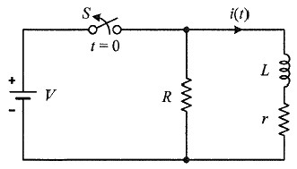
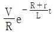
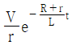
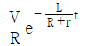
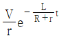
(정답률: 24%)
62. 파형이 톱니파인 경우 파형률은 약 얼마인가?
- 1.155
- 1.732
- 1.414
- 0.577
(정답률: 27%)
63. 그림과 같은 함수의 라플라스 변환은?
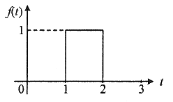
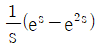
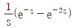
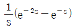
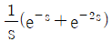
(정답률: 31%)
64. 상의 순서가 a-b-c인 불평형 3상 전류가 Ia = 15+j2 (A), Ib = -20-j14 (A), Ic = -3+j10 (A) 일 때 영상분 전류 I0는 약 몇 A 인가?
- 2.67 + j0.38
- 2.02 + j6.98
- 15.5 – j3.56
- -2.67 – j0.67
(정답률: 38%)
65. 무한장 무손실 전송선로의 임의의 위치에서 전압이 100V이었다. 이 선로의 인덕턴스가 7.5 μH/m 이고, 커패시턴스가 0.012 μF/m 일 때 이 위치에서 전류(A)는?
- 2
- 4
- 6
- 8
(정답률: 31%)
66. 전압
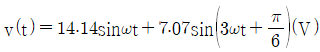
의 실효값은 약 몇 V 인가?- 3.87
- 11.2
- 15.8
- 21.2
(정답률: 33%)
67. 회로에서 저항 1Ω에 흐르는 전류 I(A)는?
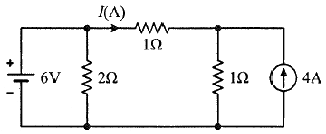
- 3
- 2
- 1
- -1
(정답률: 28%)
68. 그림 (a)와 같은 회로에 대한 구동점 임피던스의 극점과 영점이 각각 그림 (b)에 나타낸 것과 같고 Z(0)=1 일 때, 이 회로에서 R(Ω), L(H), C(F)의 값은?
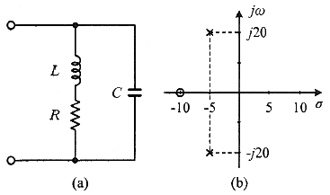
- R = 1.0Ω, L = 0.1H, C = 0.0235F
- R = 1.0Ω, L = 0.2H, C = 1.0F
- R = 2.0Ω, L = 0.1H, C = 0.0235F
- R = 2.0Ω, L = 0.2H, C = 1.0F
(정답률: 25%)
69. 선간전압이 150V, 선전류가 10√3 A, 역률이 80%인 평형 3상 유도성 부하로 공급되는 무효전력(var)은?
- 3600
- 3000
- 2700
- 1800
(정답률: 32%)
70. 그림과 같은 평형 3상회로에서 전원 전압이 Vab = 200(V)이고 부하 한상의 임피던스가 Z = 4 + j3(Ω)인 경우 전원과 부하사이 선전류 Ia는 약 몇 A 인가?
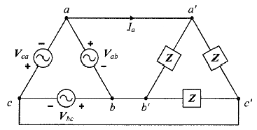
- 40√3 ∠36.87°
- 40√3 ∠-36.87°
- 40√3 ∠66.87°
- 40√3 ∠-66.87°
(정답률: 18%)
71. 제어요소가 제어대상에 주는 양은?
- 동작신호
- 조작량
- 제어량
- 궤환량
(정답률: 31%)
72. 그림과 같은 제어시스템이 안정하기 위한 k의 범위는?
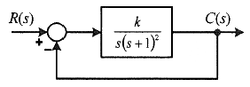
- k ＞ 0
- k ＞ 1
- 0 ＜ k ＜ 1
- 0 ＜ k ＜ 2
(정답률: 31%)
73. 전달함수가
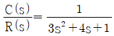
인 제어시스템의 과도 응답 특성은?- 무제동
- 부족제동
- 임계제동
- 과제동
(정답률: 27%)
74. 함수 f(t) = e-at의 z 변환 함수 F(z)는?
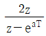
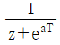
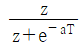
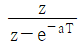
(정답률: 36%)
75. 제어시스템의 주파수 전달함수가 G(jω) = j5ω 이고, 주파수가 ω = 0.02 rad/sec 일 때 이 제어시스템의 이득(dB)은?
- 20
- 10
- -10
- -20
(정답률: 31%)
76. 전달함수가
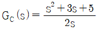
인 제어기가 있다. 이 제어기는 어떤 제어기인가?- 비례 미분 제어기
- 적분 제어기
- 비례 적분 제어기
- 비례 미분 적분 제어기
(정답률: 30%)
77. 다음 논리회로의 출력 Y는?
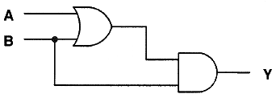
- A
- B
- A + B
- A · B
(정답률: 29%)
78. 그림의 블록선도와 같이 표현되는 제어시스템에서 A = 1, B = 1 일 때, 블록선도의 출력 C는 약 얼마인가?
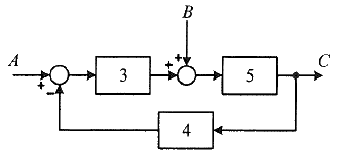
- 0.22
- 0.33
- 1.22
- 3.1
(정답률: 33%)
79. 그림과 같은 제어시스템의 폐루프 전달함수
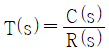
에 대한 감도 SKT는?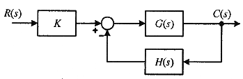
- 0.5
- 1
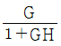
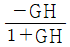
(정답률: 23%)
80. 다음과 같은 상태방정식으로 표현되는 제어시스템의 특성방정식의 근(s1, s2)은?
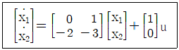
- 1, -3
- -1, -2
- -2, -3
- -1, -3
(정답률: 31%)
5과목: 전기설비기술기준 및 판단기준
81. 변전소의 주요 변압기에 계측장치를 시설하여 측정하여야 하는 것이 아닌 것은?
- 역률
- 전압
- 전력
- 전류
(정답률: 41%)
82. 전기설비기술기준에서 정하는 안전원칙에 대한 내용으로 틀린 것은?
- 전기설비는 감전, 화재 그 밖에 사람에게 위해를 주거나 물건에 손상을 줄 우려가 없도록 시설하여야 한다.
- 전기설비는 다른 전기설비, 그 밖의 물건의 기능에 전기적 또는 자기적인 장해를 주지 않도록 시설하여야 한다.
- 전기설비는 경쟁과 새로운 기술 및 사업의 도입을 촉진함으로써 전기사업의 건전한 발전을 도모하도록 시설하여야 한다.
- 전기설비는 사용목적에 적절하고 안전하게 작동하여야 하며, 그 손상으로 인하여 전기공급에 지장을 주지 않도록 시설하여야 한다.
(정답률: 43%)
83. 전식방지대책에서 매설금속체측의 누설전류에 의한 전식의 피해가 예상되는 곳에 고려하여야 하는 방법으로 틀린 것은?
- 절연코팅
- 배류장치 설치
- 변전소 간 간격 축소
- 저준위 금속체를 접속
(정답률: 30%)
84. 지중 전선로에 사용하는 지중함의 시설기준으로 틀린 것은?
- 조명 및 세척이 가능한 장치를 하도록 할 것
- 견고하고 차량 기타 중량물의 압력에 견디는 구조일 것
- 그 안의 고인 물을 제거할 수 있는 구조로 되어 있을 것
- 뚜껑은 시설자 이외의 자가 쉽게 열 수 없도록 시설할 것
(정답률: 42%)
85. 옥내 배선공사 중 반드시 절연전선을 사용하지 않아도 되는 공사방법은? (단, 옥외용 비닐절연전선은 제외한다.)
- 금속관공사
- 버스덕트공사
- 합성수지관공사
- 플로어덕트공사
(정답률: 29%)
86. 돌침, 수평도체, 메시도체의 요소 중에 한 가지 또는 이를 조합한 형식으로 시설하는 것은?
- 접지극시스템
- 수뢰부시스템
- 내부피뢰시스템
- 인하도선시스템
(정답률: 33%)
87. 풍력터빈에 설비의 손상을 방지하기 위하여 시설하는 운전상태를 계측하는 계측장치로 틀린 것은?
- 조도계
- 압력계
- 온도계
- 풍속계
(정답률: 37%)
88. 지중 전선로를 직접 매설식에 의하여 차량 기타 중량물의 압력을 받을 우려가 있는 장소에 시설하는 경우 매설 깊이는 몇 m 이상으로 하여야 하는가?
- 0.6
- 1
- 1.5
- 2
(정답률: 38%)
89. 사용전압이 154kV인 전선로를 제1종 특고압보안공사로 시설할 때 경동연선의 굵기는 몇 mm2 이상이어야 하는가?
- 55
- 100
- 150
- 200
(정답률: 33%)
90. 다음 ( )에 들어갈 내용으로 옳은 것은?
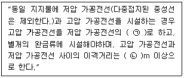
- ㉠ 아래, ㉡ 0.5
- ㉠ 아래, ㉡ 1
- ㉠ 위, ㉡ 0.5
- ㉠ 위, ㉡ 1
(정답률: 30%)
91. 시가지에 시설하는 사용전압이 170kV 이하인 특고압 가공전선로의 지지물이 철탑이고 전선이 수평으로 2 이상 있는 경우에 전선 상호 간의 간격이 4m 미만일 때에는 특고압 가공전선로의 경간은 몇 m 이하이어야 하는가?
- 100
- 150
- 200
- 250
(정답률: 20%)
92. 고압 가공전선로의 가공지선에 나경동선을 사용하려면 지름 몇 mm 이상의 것을 사용하여야 하는가?
- 2.0
- 3.0
- 4.0
- 5.0
(정답률: 33%)
93. 플로어덕트공사에 의한 저압 옥내배선에서 연선을 사용하지 않아도 되는 전선(동선)의 단면적은 최대 몇 mm2 인가?
- 2
- 4
- 6
- 10
(정답률: 29%)
94. 전압의 종별에서 교류 600V는 무엇으로 분류하는가?
- 저압
- 고압
- 특고압
- 초고압
(정답률: 43%)
95. 하나 또는 복합하여 시설하여야 하는 접지극의 방법으로 틀린 것은?
- 지중 금속구조물
- 토양에 매설된 기초 접지극
- 케이블의 금속외장 및 그 밖에 금속피복
- 대지에 매설된 강화콘크리트의 용접된 금속 보강재
(정답률: 25%)
96. 특고압 가공전선로의 지지물로 사용하는 B종 철주, B종 철근콘크리트주 또는 철탑의 종류에서 전선로의 지지물 양쪽의 경간의 차가 큰 곳에 사용하는 것은?
- 각도형
- 인류형
- 내장형
- 보강형
(정답률: 36%)
97. 사용전압이 170kV 이하의 변압기를 시설하는 변전소로서 기술원이 상주하여 감시하지는 않으나 수시로 순회하는 경우, 기술원이 상주하는 장소에 경보장치를 시설하지 않아도 되는 경우는?
- 옥내변전소에 화재가 발생한 경우
- 제어회로의 전압이 현저히 저하한 경우
- 운전조작에 필요한 차단기가 자동적으로 차단한 후 재폐로한 경우
- 수소냉각식 조상기는 그 조상기 안의 수소의 순도가 90% 이하로 저하된 경우
(정답률: 26%)
98. 일반 주택의 저압 옥내배선을 점검하였더니 다음과 같이 시설되어 있었을 경우 시설기준에 적합하지 않은 것은?
- 합성수지관의 지지점 간의 거리를 2m로 하였다.
- 합성수지관 안에서 전선의 접속점이 없도록 하였다.
- 금속관공사에 옥외용 비닐절연전선을 제외한 절연전선을 사용하였다.
- 인입구에 가까운 곳으로서 쉽게 개폐할 수 있는 곳에 개폐기를 각 극에 시설하였다.
(정답률: 30%)
99. 아파트 세대 요길에 “비데용 콘센트”를 시설하고자 한다. 다음의 시설방법 중 적합하지 않은 것은?
- 콘센트는 접지극이 없는 것을 사용한다.
- 습기가 많은 장소에 시설하는 콘센트는 방습장치를 하여야 한다.
- 콘센트를 시설하는 경우에는 절연변압기(정격용량 3kVA 이하인 것에 한한다.)로 보호된 전로에 접속하여야 한다.
- 콘센트를 시설하는 경우네는 인체감전보호용 누전차단기(정격감도전류 15mA 이하, 동작시간 0.03초 이하의 전류동작형의 것에 한한다.)로 보호된 전로에 접속하여야 한다.
(정답률: 35%)
100. 특고압용 타냉식 변압기의 냉각장치에 고장이 생긴 경우를 대비하여 어떤 보호장치를 하여야 하는가?
- 경보장치
- 속도조정장치
- 온도시험장치
- 냉매흐름장치
(정답률: 39%)